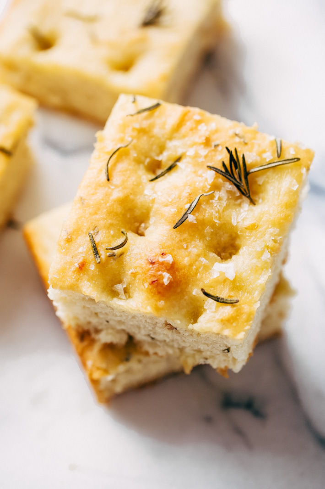

Roasted Garlic Rosemary Focaccia Bread

The perfect companion to a bowl of soup.
Roasted garlic scented rosemary focaccia bread is perfect for pasta night
or when you've got guests coming! If you're looking for something new to
make during the holidays, let this rosemary focaccia bread be it. Follow
the step-by-step recipe and see how easy it is to make!
Ingredients
- 1 1/3 cup warm water (35-40ºC to be exact)
- 2 teaspoons sugar
- 1 (6 grams) packet instant yeast (2 1/4 teaspoons)
- 3 3/4 cup flour
- 2 teaspoons salt
- 1/2 cup olive oil, plus more for greasing
- 1 tablespoon chopped rosemary (plus more)
- 1/4 cup roasted garlic, roughly chopped
- flaked sea salt (for topping)
Steps
-
Add the warm water, sugar, and yeast to a 2-cup measuring cup. Give it a
stir and allow the yeast to bloom for 15 minutes. You'll see the yeast
is foamy and bubbly near the end of the 15 minutes.
-
Meanwhile, add the flour, salt, 1/4 cup of olive oil, chopped rosemary,
and roasted garlic to the bowl of a stand mixer. Using the dough hook
attachment, turn the mixer on briefly to allow the ingredients to mix
together. Pour the yeast mixture into the flour mixture with the mixer
running on low. Increase the speed to medium and let the mixer run for
4-5 minutes. Stop and scrape the dough if all the flour doesn't
incorporate fully. After 5 minutes, if the dough seems too sticky, use
an additional 1-2 tablespoon of flour and form it into a ball using your
hands.
-
Transfer the dough into a large bowl that has been greased. Rub a dime
size of olive oil on the surface of the dough and cover with a piece of
plastic wrap. Allow it to rest in a warm place for 1-1 1/2 hours or
until it's nearly doubled in size. I usually do this in my dryer
-
Position a rack in the center of the oven and preheat the oven to 400ºF.
Using half of the remaining olive oil (2 tbsp), grease the bottom of a
9x13 dish. Remove the plastic wrap, and dump the dough into the prepared
dish. Gently, using your fingers, push the dough out so that it fits the
pan. Cover the dough with the plastic wrap and let sit for 20 minutes.
-
Brush the remaining 2 tablespoons of olive oil onto the dough. Using
your fingers poke holes in the surface of the dough (seriously, poke all
the way to the pan!) Sprinkle with additional rosemary, if desired and
flaked sea salt. Bake the bread for 20-25 minutes or until golden brown
on top and cooked all the way through. Remove from the oven, drizzle or
brush with a little bit more olive oil and let cool for a few minutes
before slicing and serving!